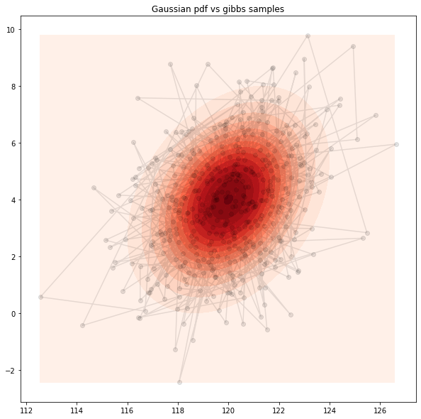
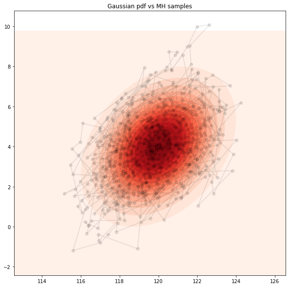
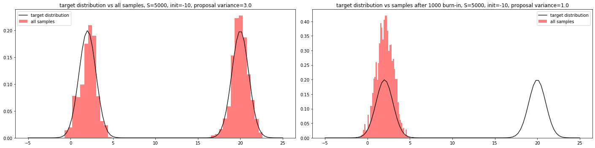

Lab 4: Gibbs and Metropolis-Hastings Sampling#
This lab is adapted from AM207 (Harvard). Data files are in the book’s data/ folder. Worked solutions are collapsed: try each exercise before expanding them.
In this lab
Gibbs on a Bivariate Gaussian
Gibbs versus Metropolis Hastings on a Bivariate Gaussian
Metropolis Hastings on a Mixture of Gaussians
Gibbs on a Bivariate Gaussian#
Implement a Gibbs sampler to sample from the following bivariate Gaussian (you can look up the formulae for the conditionals of a bivariate Gaussian):
Scatter plot the samples with the Gaussian pdf, connect consecutive samples with a line so that you can see how the sampler moves in the sample space.
Visually check for convergence of your chain. Apply the appropriate amount of burn-in and thinnning to an appropriate choice of number of total samples.
Explore the effect of your choice of initialization on the performance of your sampler.
Implement a Gibbs sampler to sample from a different bivariate Gaussian:
Again, scatter plot the samples with the Gaussian pdf, connect consecutive samples with a line so that you can see how the sampler moves in the sample space.
Discuss how the shape of the Gaussian affects the performance of the sampler. How do you explain what you observe?
Solution
Let’s denote the first component, \(X_1\), of \(\mathbf{X}\), by \(X\) and the second component, \(X_2\), by \(Y\).
Now, if \(X\) and \(Y\) are jointly normally distributed with \(\mu = [\mu_X, \mu_Y]\) and \(\Sigma = \left[\begin{array}{cc}\sigma^2_X & \rho\sigma_X\sigma_Y\\\rho\sigma_X\sigma_Y & \sigma^2_Y\end{array}\right]\). The conditionals \(p(Y | X) = f_{Y\vert X}\) and \(p(X | Y) = f_{X\vert Y}\) are both normal with:
Note: The derivation of these forms are algebraically involved but not difficult, we encourage you to do it by hand once (following online notes if you’d like) to get a flavor of how to manipulate Gaussian distributions.
In our case, we see that we have \(\mu_X = 120, \mu_Y = 4\), \(\sigma_X = \sigma_Y = \sqrt{3}\). Then we have \(\rho = \frac{\text{Cov}[X, Y]}{\sigma_X\sigma_Y} = \frac{1}{3}\).
Finally, we have that our two conditionals are:
Our Gibbs Sampling will consists of repeating the following two steps:
Draw \(Y\) from \(p(Y | x)\)
Draw \(X\) from \(p(X| y)\)

Gibbs versus Metropolis Hastings on a Bivariate Gaussian#
Implement a Metropolis-Hastings sampler for the two Gaussians in the previous problem. Keep track of the acceptance rate.
Try a bivariate Gaussian proposal distribution \(\mathcal{N}(X_n, \sigma^2I_{2\times 2})\), where \(I_{2\times 2}\) is the identity matrix, \(X_n\) is the current sample and \(\sigma^2\) is your choice of variance. Try different values of \(\sigma\).
Discuss how does the shape of the Gaussian effect the performance of your sampler.
How does MH perform in comparison to Gibbs?
Try a bivariate Gaussian proposal distribution
Does this proposal distribution perform better or worse than \(\mathcal{N}(X_n, \sigma^2I_{2\times 2})\)? Why do you think it does (or does not)?

Metropolis Hastings on a Mixture of Gaussians#
Recall the mixture of two univariate Gaussian example in class where our Metropolis-Hastings sampler was unable to capture both modes in the target distribution.
Is this because this algorithm is incapable of sampling from this specific distribution of this class of multimodal distributions? Or did we make inappropriate design choices when we specified our sampler?
Exercise: play with the variance of the normal proposal distribution (try some very small values and some very large values), what is the effect of the variance have on the performance of your sampler?
Play with the choice of initialization of the Metropolis-Hastings algorithm, what is the effect of the initialization on the performance of your sampler?
